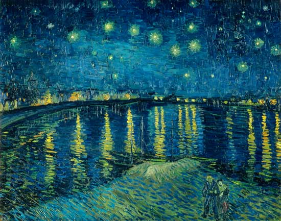

Vincent Van Gogh
Vincent van Gogh (1853-1890) ist zweifellos eine gleichsam geniale wie traurige Figur der Kunstgeschichte: Von seinen Zeitgenossen verachtet und verspottet, schuf er mit seinen Bildern etwas Einzigartiges, Richtungsweisendes, noch nie Dagewesenes. Denn heute ist man sich sicherer denn je: Van Gogh ist Legende. Aber leider wurde er dies nicht zu seinen Lebzeiten. Anerkennung für seine revolutionäre Arbeit erfuhr der einsame, zurückgezogene Maler während seines ganzen Lebens praktisch nicht, woran er auch schließlich zerbrach: Er beging 1890 Suizid durch einen Schuss in die Brust
Er war seiner Zeit weit voraus...
künstlerische Entwicklung und Motive
über die Entwicklung seiner künstlerischen Gestaltungsweise:
"Maler ist er, Maler bleibt er; ob er, noch jung, Holland ins Dunkle übersetzt, ob er etwas älter, als Divisionist Montmartre und seine Gärten malt oder schließlich durch wütenden, pastosen Farbauftrag den Süden oder Auvers-sur-Oise wiedergibt. Ob er zeichnet oder nicht zeichnet, ob er sich in Farbflecken oder in Entstellung verliert, Maler bleibt er immerdar."
Emile Bernard, 1893
"Je hässlicher, älter, boshafter, kränker, ärmer ich werde, umso mehr suche ich die Scharte dadurch auszuwetzen, dass ich meine Farbe leuchtend, wohl ausgewogen, strahlend mache."
Vincent van Gogh
Über Goghs Verhältnis zu dem Impressionismus:
"Ich würde mich nicht wundern, wenn die Impressionisten bald allerlei gegen meine Malweise einzuwenden hätten, die eher durch die Ideen von Delacroix befruchtet ist als durch die ihren. Denn statt genau wiederzugeben, was mir die Augen zeigen, bediene ich mich der Farbe eigenmächtiger, um mich stark auszudrücken."
Vincent van Gogh
Einige von Seine Brühmten Gemälden
Sternennacht über der Rhône (1888)
Was macht dieses Gemälde berühmt?
Die Sternreiche Nacht steht wahrscheinlich ganz oben auf der Liste, wenn es darum geht, Van Goghs berühmteste Kunstwerke zu benennen. Sie finden es auf Postern, neuartigen Socken, Tragetaschen, Computerhintergründen und tätowierten Armen - Sie nennen es. Sie finden es auch an den Wänden des Museum of Modern Art in New York, wo es als einer der größten Aufmerksamkeitsgewinner des Museums fungiert (was angesichts der Menge wirklich viel sagt andere erstaunliche Gemälde in der Sammlung des MoMA).
Die Sternreiche Nacht ist nicht nur eines der beliebtesten Gemälde von Van Gogh; Es ist eines der kultigsten Kunstwerke, die es gibt. Sein spektakulärer, wirbelnder Nachthimmel voller expressionistischer Spiralen zieht bis heute eine starke emotionale Reaktion der Zuschauer auf sich.
Was ist die Hintergrundgeschichte?
Während es in diesem Beitrag um berühmte Van-Gogh-Gemälde geht und nicht um eine Biographie des Künstlers selbst, kann sein Leben beim Schreiben über seine Kunst nicht ignoriert werden. Van Gogh checkte sich 1889 freiwillig in die Irrenanstalt in Saint-Rémy-de-Provence ein, einige Monate nach der berüchtigten Episode, in der er sein linkes Ohr verstümmelte. Dieses Gemälde basiert auf dem Blick aus seinem Fenster in die Anstalt.
Einige Kunstkritiker theoretisieren, dass das Gemälde in einem aufgeregten Zustand entstanden ist, was sich in der fast halluzinatorischen Natur des Werks widerspiegelt und möglicherweise durch die Tatsache gestützt wird, dass Van Gogh nur einen Monat später einen zweiten Zusammenbruch erlebte Die Sternreiche Nacht wurde abgeschlossen.
Obwohl Van Gogh heute als eines der wertvollsten Kunstwerke der Geschichte gilt, scheint er dieses Gemälde persönlich als erfolgloses Experiment angesehen zu haben. Es wurde nur kurz in einem Brief an seinen Bruder Theo als „Nachtstudium“ erwähnt, einige Monate nachdem es bereits gemalt war. Später beschloss er, das Gemälde nicht in die Niederlande zu schicken (da er andere Werke sehr bevorzugte) und bezeichnete sein Meisterwerk schließlich in einem Brief an seine Malerkollegin Émile Bernard als „Misserfolg“.
Sonnenblumen (1888)
Was macht diese Bilder berühmt?
Sonnenblumes ist nicht nur ein Gemälde, sondern zwei ganze Serien von mehreren Gemälden von Sonnenblumen. Wenn sich jemand auf Van Goghs "Sonnenblumen" bezieht, spricht er meistens über die Serie, die er in Arles erstellt hat und die aus vier Anfangsversionen und drei Wiederholungen derselben Idee besteht.
Weniger bekannt sind die "Pariser Sonnenblumen", die er zwischen 1886 und 1888 mit seinem Bruder in Paris kreierte. Weniger triumphierend und nicht in voller Blüte sind diese Sonnenblumen dennoch ziemlich spektakulär zu sehen und können in Museen wie The Met gefunden werden in New York das Kröller-Müller Museum und (natürlich) das Van Gogh Museum in Amsterdam.
Was ist die Hintergrundgeschichte?
Van Gogh selbst scheint von Sonnenblumen absolut begeistert gewesen zu sein, was sich sowohl in der Menge der von ihm geschaffenen Gemälde auf Sonnenblumenbasis als auch in seinen Beschreibungen in den Briefen widerspiegelt, die er an seinen Bruder und seine Freunde schrie
Im Jahr 1888 schrieb Van Gogh: "Ich male mit der Begeisterung eines Marseillais, der Bouillabaisse isst, was Sie nicht überraschen wird, wenn es darum geht, große Sonnenblumen zu malen." Im Grunde liebte er es, Sonnenblumen zu malen, und jeder wusste es. In demselben Brief erklärte er, wie es sein Traum war, mit seinem Freund Paul Gauguin in einem Studio zu arbeiten, und dass er vorhatte, Dekorationen für die Wände zu schaffen, die aus riesigen Sonnenblumengemälden bestehen.
Es kann vermutet werden, dass Gauguin selbst wahrscheinlich auch ein Fan von Sonnenblumen war - insbesondere von denen, die Van Gogh gemalt hat. 1889 "beanspruchte" Gauguin eines der Sonnenblumengemälde als Gegenleistung für einige seiner eigenen Arbeiten, die er Van Gogh überließ, zu Vincents großer Bestürzung:
„Ich halte definitiv meine Sonnenblumen in Frage. Er hat schon zwei davon, lass ihn das halten. Und wenn er mit dem Austausch, den er mit mir gemacht hat, nicht zufrieden ist, kann er seine kleine Martinique-Leinwand und sein Selbstporträt, das er mir aus der Bretagne geschickt hat, zurücknehmen und mir gleichzeitig mein Porträt und die beiden Sonnenblumen zurückgeben Leinwände, die er nach Paris gebracht hat. Wenn er dieses Thema jemals wieder anspricht, habe ich Ihnen gesagt, wie die Dinge stehen. “
Mandelblüten (1888–1890)
Was macht dieses Gemälde berühmt?
Japonaiserie Flowering Plum Tree (nach Hiroshige), ein Kunstwerk von Vincent van Gogh, basierend auf einem japanischen Kunstwerk mit blühenden Pflaumenbäumen.
Einfach gesagt, Van Goghs Mandelblüten sind wunderschön. Das Thema ist ästhetisch ansprechend und die Freude des Künstlers, sie zu malen, zeigt sich deutlich im Ergebnis. Dieses besondere Gemälde ist das berühmteste aus einer ganzen Reihe, die sich blühenden Mandelbäumen widmet.
Eine wenig bekannte Tatsache über Van Gogh ist, dass er von japanischer Kunst besessen war und stark von Ukiyo-e-Holzschnitten und -Drucken beeinflusst wurde. Die Inspiration hinter der Arbeit lässt sich eindeutig auf diesen japanischen Kunststil mit der Arbeit von 1887 zurückführen Japonaiserie Blühender Pflaumenbaum (nach Hiroshige) - auch hier abgebildet - ist sowohl eine Hommage an den japanischen Künstler Hiroshige als auch eine Vorahnung von Van Goghs eigenem Meisterwerk.
Was ist die Hintergrundgeschichte?
Van Gogh erlebte während seiner Zeit in Südfrankreich die produktivste Ära seiner Karriere und bezeichnete Arles aufgrund seiner Fülle an Sonnenlicht und blühenden Bäumen als „Japan des Südens“. Er kam zum ersten Mal im März 1888 an, als die Obstbäume zu blühen begannen, und begann sofort mit einer fast beispiellosen Geschwindigkeit zu malen:
"Ich bin bis an die Ohren bei der Arbeit, denn die Bäume blühen und ich möchte einen provenzalischen Obstgarten von erstaunlicher Fröhlichkeit malen."
Dieses besondere Werk, Van Goghs berühmtestes Gemälde von Mandelblüten, wurde aus einem anderen besonderen Grund geschaffen: der Geburt seines Neffen, des Sohnes seines Bruders Theo. Es ist eines der seltenen Van-Gogh-Gemälde, auf denen Sie Hoffnung, Freude und Gelassenheit sehen können - was es umso spezieller macht.
Wo ist es?
📍 Van Gogh Museum, Amsterdam.
Café Terrasse bei Nacht (1888)
Was macht dieses Gemälde berühmt?
Dieses Gemälde war das erste Mal, dass Van Gogh sich darauf konzentrierte, seine ikonischen Abendhintergründe mit Sternenhimmel zu kreieren - er kreierte weiter Sternennacht über der Rhône bald darauf gefolgt von Die Sternreiche Nacht. Die Farben fallen sofort auf, und Sie können erkennen, dass es sich um ein Van-Gogh-Gemälde handelt, das allein auf der Farbpalette und den dunklen Silhouetten in der Ferne basiert.
Es ist so beliebt, dass die genaue Stelle in Arles, an der Van Gogh dieses Bild geschaffen hat, Anfang der neunziger Jahre renoviert wurde, um der Stelle genauer zu ähneln (oder sie zu replizieren), wie sie war, als der Künstler sie in diesem Gemälde verewigte.
Was ist die Hintergrundgeschichte?
Van Gogh selbst war zu dieser Zeit eindeutig inspiriert und war begeistert von der Idee, die Nacht in seinen Gemälden darzustellen. Nachdem er gerade nach Arles gezogen war, war er voller Ideen und hoffnungsvoll in Bezug auf die Richtung seiner Kunst. Obwohl Van Gogh erst zwei Jahre vor seinem Tod war, begann er gerade damit, den Grundstein für einige seiner berühmtesten Gemälde zu legen, in denen er verkörpert war Caféterrasse bei Nacht.
„Jetzt gibt es ein Gemälde der Nacht ohne Schwarz. Mit nichts als schönem Blau, Violett und Grün, und in dieser Umgebung ist das beleuchtete Quadrat blass schwefelfarben, zitronengrün gefärbt. Ich male sehr gerne nachts vor Ort. In der Vergangenheit haben sie tagsüber gezeichnet und das Bild aus der Zeichnung gemalt. Aber ich finde, dass es mir passt, das Ding sofort zu malen. Es ist ganz richtig, dass ich ein Blau für ein Grün im Dunkeln nehmen kann, ein blaues Flieder für ein rosa Flieder, da Sie die Art des Tons nicht klar erkennen können. Aber es ist die einzige Möglichkeit, mit einem schlechten, blassen und weißlichen Licht von der herkömmlichen schwarzen Nacht wegzukommen, während eine bloße Kerze für sich genommen die reichsten Gelbs und Orangen hervorbringt. “ - Vincent van Gogh.
Wo ist es?
📍 Kröller-Müller-Museum, Otterlo.

Weizenfeld mit Krähen (1890)
Was macht dieses Gemälde berühmt?
In seinen letzten Tagen malte Van Gogh mehrere Darstellungen der ihn umgebenden Weizenfelder. Von ihnen ist dieser der berühmteste, aber auch der dunkelste. Es scheint ein Gefühl der Isolation und Einsamkeit zu zeigen, mit einem Pfad, der in der Mitte des Feldes endet und nirgendwohin führt und von Krähen umkreist wird. Es ist ein düsteres Bild.
Es gibt viele andere Interpretationen des Gemäldes - einschließlich eines Gedankengangs, dass keine Spur von Angst oder Verzweiflung zu finden ist (Walther und Metzger) - und letztendlich gibt es keine Möglichkeit, die Motivationen des Künstlers zu kennen. Was wir sicher wissen, ist, dass die dramatische Farbpalette eine Art Mischung zwischen Die Sternreiche Nacht und Sonnenblumenmacht dieses Gemälde zu einem der viszeralsten und auffälligsten von Van Gogh
Was ist die Hintergrundgeschichte?
Im Juli 1890 fertiggestellt, könnte dies Van Goghs letztes Werk gewesen sein - es gibt leider keine abschließenden Briefe oder Aufzeichnungen zu diesem Thema. Es bleibt die Tatsache, dass dieses Gemälde im selben Monat fertiggestellt wurde, in dem Vincent sich in die Brust schoss, entweder in der Nähe oder auf dem abgebildeten Weizenfeld. Es ist unmöglich, dieses Gemälde ohne diese grimmige Erkenntnis zu betrachten.
Wo ist es?
📍 Van Gogh Museum, Amsterdam.